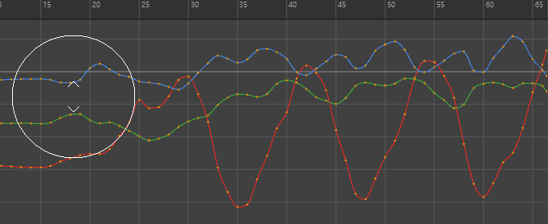
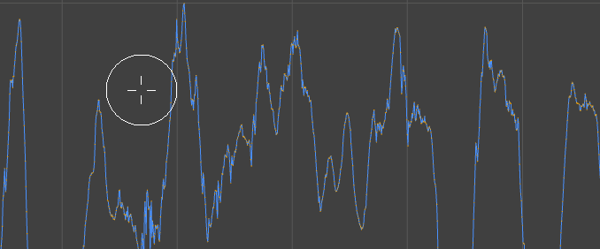
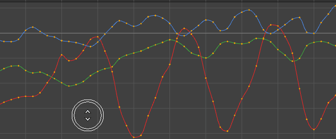
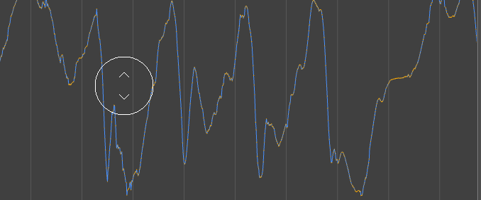
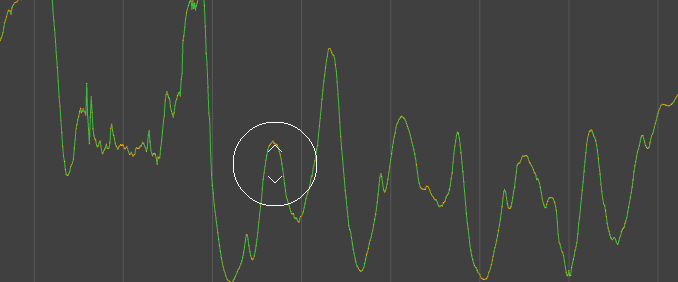

可以使用曲线图编辑器雕刻工具通过笔刷样式工具对曲线分段上的关键帧执行直观修改。

用于修改动画的曲线雕刻工具（演示由 Jim Donovan 提供）
若要打开“曲线图编辑器”(Graph Editor)曲线雕刻工具，请执行以下操作之一：
- 在“曲线图编辑器”(Graph Editor)工具栏上单击“抓取”(Grab)
 、“平滑”(Smooth)
、“平滑”(Smooth)  、“涂抹”(Smear)
、“涂抹”(Smear)  或“关键帧减少器”(Key Reducer)
或“关键帧减少器”(Key Reducer)  。
。
- 在“曲线图编辑器”(Graph Editor)的“编辑”(Edit)菜单中，选择“变换工具 > 雕刻工具”(Transformation Tools > Sculpting Tools)，然后选择：
- “抓取”(Grab)工具
- “平滑”(Smooth)工具
- “涂抹”(Smear)工具
- “关键帧减少器”(Key Reducer)工具
提示： 在 Maya 学习频道上观看动画曲线雕刻视频！

展平曲线上的关键帧（“平滑”(Smooth)工具）
选择“曲线图编辑器”(Graph Editor)的“平滑”(Smooth)工具 ，然后在要在图表视图中平滑的曲线部分上拖动。
，然后在要在图表视图中平滑的曲线部分上拖动。
注： “曲线图编辑器”(Graph Editor)中的“平滑”(Smooth)和“涂抹”(Smear)雕刻工具均不遵循值捕捉。

在可配置笔刷半径内偏移曲线上的关键帧（“涂抹”(Smear)工具）
从“曲线图编辑器”(Graph Editor)工具栏中选择“曲线图编辑器”(Graph Editor)的“涂抹”(Smear)工具 ，然后在要在图表视图中影响的曲线区域上拖动。
，然后在要在图表视图中影响的曲线区域上拖动。
注： “曲线图编辑器”(Graph Editor)中的“平滑”(Smooth)和“涂抹”(Smear)雕刻工具均不遵循值捕捉。

减少关键帧密集的曲线上的关键帧数（“关键帧减少器”(Key Reducer)工具）
选择“曲线图编辑器”(Graph Editor)中的“关键帧减少器”(Key Reducer)工具 ，然后在图表视图中要减少关键帧数的曲线区域上拖动。使用“关键帧减少器”(Key Reducer)工具可以简化关键帧密集的曲线，以减小文件大小并提高性能。

“关键帧减少器”(Key Reducer)雕刻工具类似于“曲线图编辑器”(Graph Editor)的“曲线”(Curves)菜单中的“关键帧减少器”(Key Reducer)过滤器，但作为雕刻工具，您可以随时对特定区域进行缩减。
注： “关键帧减少器”(Key Reducer)雕刻工具不适用于四元数旋转曲线。
选择要雕刻的曲线
雕刻工具笔刷半径影响关键帧，即笔刷圈内的任何关键帧都将更改，除非关键帧或通道已锁定。选择区域由单击鼠标的位置定义，因此如果在空白区域中单击，然后在图表视图中拖动，即使在曲线上移动，也不会更改任何内容。如果多条曲线位于笔刷半径范围内，则它们将同时受到影响。

调整“曲线图编辑器”(Graph Editor)雕刻笔刷大小
使用鼠标中键向左或向右拖动可扩展或收缩雕刻环的大小。
提示： 按住 Ctrl 键并使用鼠标中键拖动可使笔刷半径从零开始，而不是从其当前大小开始。

有关工具设置的详细信息，请参见雕刻曲线工具。
调整雕刻笔刷的大小
增加“曲线图编辑器”(Graph Editor)雕刻笔刷的强度
使用鼠标中键向上或向下拖动可更改操作的强度。雕刻环内部的强度指示器将调整大小以显示工具的强度。
提示： 按住 Ctrl 键并使用鼠标中键拖动可使笔刷强度从零开始，而不是从其当前强度开始。

调整雕刻笔刷的强度
有关工具设置的详细信息，请参见雕刻曲线工具。
使用衰减创建自定义笔刷
可以使用衰减曲线为笔刷光标的强度设计自定义雕刻笔刷。可以从预设中进行选择，或拖动曲线以重塑其形状。这些设置类似于雕刻衰减工具，但会影响“曲线图编辑器”(Graph Editor)图表视图中的关键帧。有关使用衰减曲线的信息，请参见调整工具衰减。
注： “关键帧减少器”(Key Reducer)雕刻工具没有衰减曲线。请改用“工具设置”(Tool Settings)中的“大小”(Size)和“强度”(Strength)滑块。